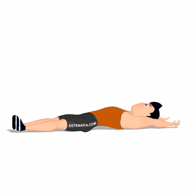

V-Sit

Exercício para fortalecimento e hipertrofia da região abdominal, reto abdominal.
Ficha Técnica
Tipo: Funcional
Grupo Muscular: Abdome
Aparelho: Nenhum
Músculos: Nenhum
Como realizar
- Deite e com braços e pernas estendidos sobre um colchonete;
- Eleve as pernas à altura do quadril e braços estendidos paralelos as orelhas;
- Mova as pernas e os braços em direção ao outro, flexionando o tronco para formar um V;
- Concentre a força nos músculos abdominais;
- Retorne à posição inicial, repita os movimentos pelo número de repetições orientado pelo professor.
 RC STORE
RC STORE